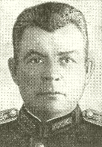

Соболев Иван Павлович — участник Великой Отечественной войны. Герой Советского Союза (1943). Почётный гражданин города Витебска (13.10.1977).
И. П. Соболев родился в деревне Шапуры Витебского уезда (сейчас Витебского района Витебской области). Окончил семилетку в Селютах Витебского района. Работал на инструментальном заводе в Витебске. В Красной Армии с 1927 года. В 1931 году окончил Ленинградское военно-инженерное училище. Во время Великой Отечественной войны на фронте с 1941 года.
Командир 19-го отдельного моторизованного понтонно-мостового батальона (7-я гвардейская армия, Степной фронт) подполковник И. П. Соболев отличился 29 сентября 1943 года при форсировании реки Днепр у села Солошино Верхнеднепровского района Днепропетровской области.
Указом Президиума Верховного Совета СССР от 26 октября 1943 года за образцовое выполнение боевых заданий командования на фронте борьбы с немецко-фашистскими захватчиками и проявленные мужество и героизм подполковнику Соболеву И. П. присвоено звание Героя Советского Союза с вручением ордена Ленина и медали «Золотая Звезда».
После войны И. П. Соболев продолжал службу в Советской Армии. В 1952 году окончил Высшую офицерскую инженерную школу. С 1955 года полковник И. П. Соболев в отставке.
Жил и работал в Витебске.